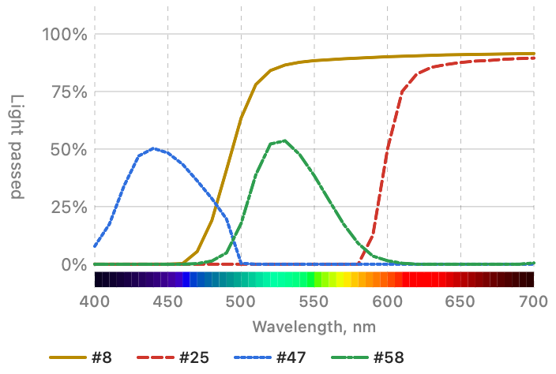

Stereo Dandifier · Help · Links · Support · Privacy
Wratten Lens Filter
A coloured filter before the lens: Kodak's Wratten filters, simulated from their published spectral transmittance (Peed, "Transmission of Wratten Filters", for Eastman Kodak, in the CRC Handbook of Chemistry and Physics). Like the glass itself, it only ever takes light away.

Using it
Placed before a black-and-white Film Simulation, it changes how that film renders colours as greys: a yellow, orange or red filter darkens a blue sky, as such filters always have. Placed before a colour film, it balances or warms the light.
A deep filter darkens the picture considerably — a #47 passes but 2 to 3% of the light — and this should be made good with Exposure in Adjust Colour afterwards.
Settings
The same for every pair, and saved with the workflow:
- Filter — chosen by colour and Wratten number; #8, Yellow (K2), by default.
- Intensity — how much of the filter's effect is applied.
The dialog charts the chosen filter's transmission as Kodak published it. The chart is of the filter itself, and does not change with Intensity.